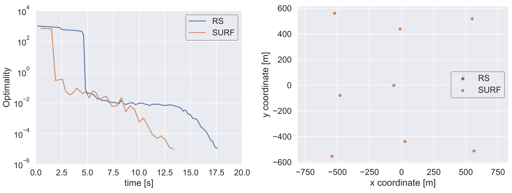
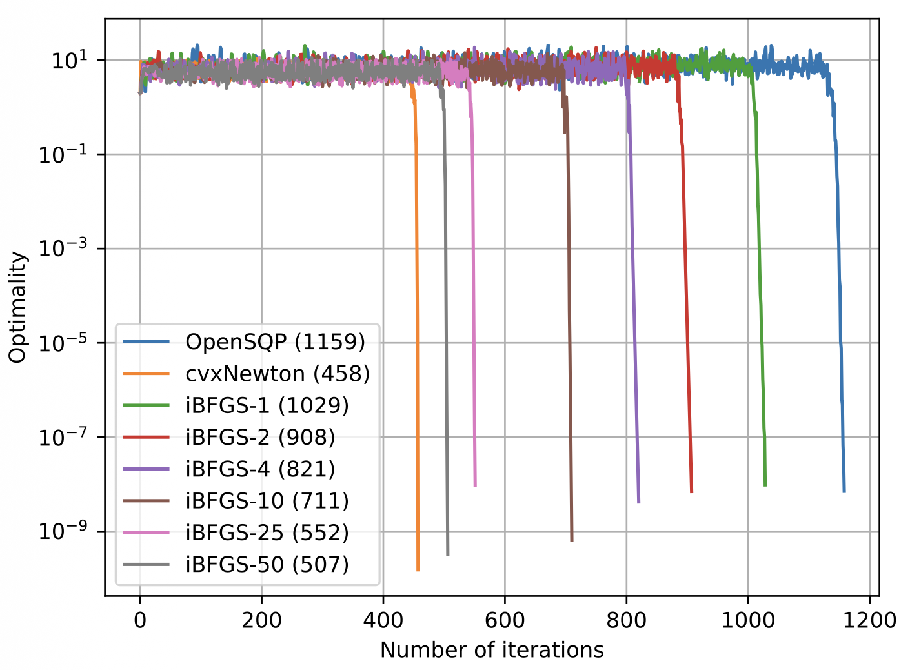
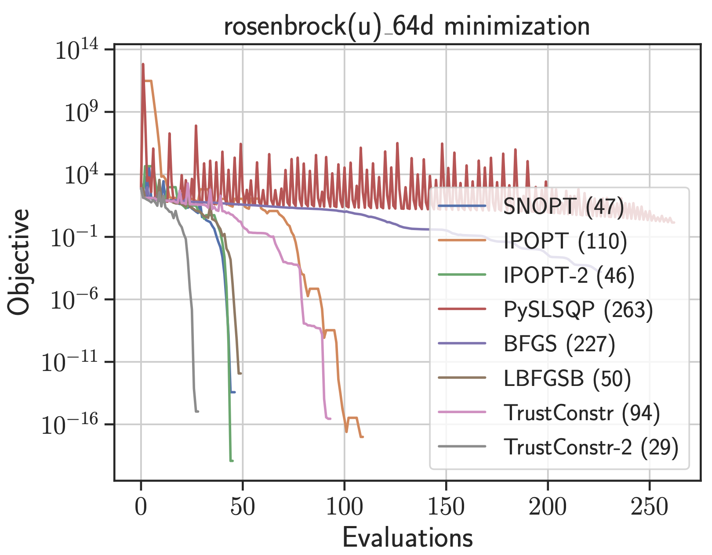

Nonlinear programming algorithms and tools
- Context
- Constrained nonlinear programming solves engineering design problems using repeated analyses, gradients, and approximations to second-order behavior.
- Gap
- Fully converging every analysis can waste computation, and quasi-Newton updates can provide insufficient curvature information for difficult problems.
- Research goal
- Reduce optimization cost through adaptive analysis convergence and improved curvature approximations, with modular software for testing algorithm changes.
Selected studies
ReferencesMatching analysis effort to optimization progress
SURF combines reduced- and full-space SQP steps, adapting how closely the analysis equations are solved during optimization. The inequality-constrained algorithm reaches a better local motor design and solves the wind-farm test about 25% faster than the reduced-space method at the same local solution.
Anugrah Jo Joshy, Ryan Dunn, Mark Sperry, Victor E. Gandarillas, John T. Hwang. An SQP algorithm based on a hybrid architecture for accelerating optimization of large-scale systems. AIAA AVIATION 2023 Forum, 2023.
@inproceedings{joshy2023sqp,
author = {Anugrah Jo Joshy and Ryan Dunn and Mark Sperry and Victor E. Gandarillas and John T. Hwang},
title = {An SQP algorithm based on a hybrid architecture for accelerating optimization of large-scale systems},
booktitle = {AIAA AVIATION 2023 Forum},
year = {2023},
doi = {10.2514/6.2023-4263},
url = {https://doi.org/10.2514/6.2023-4263},
note = {Metadata verification: Crossref title}
}

Improving curvature approximations without forming full Hessians
Repeated BFGS updates incorporate Hessian-vector products without forming the exact Hessian, reducing SQP iterations in Rosenbrock and cantilever-beam tests. A 553-problem CUTEst comparison assesses runtime and evaluation counts for a single-HVP update against standard BFGS. A separate direct-fit approximation is explored on Rosenbrock as a preliminary alternative.
Anugrah Jo Joshy, Jonathan Zerez, John T. Hwang. Enhancing Robustness and Efficiency in Large-Scale System Design Optimization Using Hessian-Vector Products. ASME IDETC/CIE 2026, Houston, Aug 23–26; public domain at conference, 2026.
@inproceedings{joshy2026enhancing,
author = {Anugrah Jo Joshy and Jonathan Zerez and John T. Hwang},
title = {Enhancing Robustness and Efficiency in Large-Scale System Design Optimization Using Hessian-Vector Products},
booktitle = {ASME IDETC/CIE 2026, Houston, Aug 23–26; public domain at conference},
year = {2026}
}

Making optimization algorithms easier to adapt and compare
modOpt assembles optimization algorithms from interchangeable numerical components, so developers can modify an algorithm one module at a time. Python implementations, interfaces to established solvers and modeling tools, and shared recording and benchmarking facilities support algorithm development and comparison on common problems.
Anugrah Jo Joshy, John T. Hwang. modOpt: A modular development environment and library for optimization algorithms. Advances in Engineering Software, 2026.
@article{joshy2026modopt,
author = {Anugrah Jo Joshy and John T. Hwang},
title = {modOpt: A modular development environment and library for optimization algorithms},
journal = {Advances in Engineering Software},
year = {2026},
volume = {213},
pages = {104084},
doi = {10.1016/j.advengsoft.2025.104084},
url = {https://doi.org/10.1016/j.advengsoft.2025.104084},
eprint = {2410.12942},
archiveprefix = {arXiv},
note = {Metadata verification: Crossref DOI}
}

References
- Anugrah Jo Joshy, Ryan Dunn, Mark Sperry, Victor E. Gandarillas, John T. Hwang. An SQP algorithm based on a hybrid architecture for accelerating optimization of large-scale systems. AIAA AVIATION 2023 Forum, 2023.DOIPDF
@inproceedings{joshy2023sqp, author = {Anugrah Jo Joshy and Ryan Dunn and Mark Sperry and Victor E. Gandarillas and John T. Hwang}, title = {An SQP algorithm based on a hybrid architecture for accelerating optimization of large-scale systems}, booktitle = {AIAA AVIATION 2023 Forum}, year = {2023}, doi = {10.2514/6.2023-4263}, url = {https://doi.org/10.2514/6.2023-4263}, note = {Metadata verification: Crossref title} } - Anugrah Jo Joshy, Jonathan Zerez, John T. Hwang. Enhancing Robustness and Efficiency in Large-Scale System Design Optimization Using Hessian-Vector Products. ASME IDETC/CIE 2026, Houston, Aug 23–26; public domain at conference, 2026. Manuscript
@inproceedings{joshy2026enhancing, author = {Anugrah Jo Joshy and Jonathan Zerez and John T. Hwang}, title = {Enhancing Robustness and Efficiency in Large-Scale System Design Optimization Using Hessian-Vector Products}, booktitle = {ASME IDETC/CIE 2026, Houston, Aug 23–26; public domain at conference}, year = {2026} } - Anugrah Jo Joshy, John T. Hwang. modOpt: A modular development environment and library for optimization algorithms. Advances in Engineering Software, 2026.DOIPDF
@article{joshy2026modopt, author = {Anugrah Jo Joshy and John T. Hwang}, title = {modOpt: A modular development environment and library for optimization algorithms}, journal = {Advances in Engineering Software}, year = {2026}, volume = {213}, pages = {104084}, doi = {10.1016/j.advengsoft.2025.104084}, url = {https://doi.org/10.1016/j.advengsoft.2025.104084}, eprint = {2410.12942}, archiveprefix = {arXiv}, note = {Metadata verification: Crossref DOI} } - Anugrah Jo Joshy, John T. Hwang. Unifying Monolithic Architectures for Large-Scale System Design Optimization. AIAA Journal, 2021.DOIPDF
@article{joshy2021unifying, author = {Anugrah Jo Joshy and John T. Hwang}, title = {Unifying Monolithic Architectures for Large-Scale System Design Optimization}, journal = {AIAA Journal}, year = {2021}, volume = {59}, number = {6}, pages = {1953-1963}, doi = {10.2514/1.j059954}, url = {https://doi.org/10.2514/1.j059954}, note = {Metadata verification: Crossref DOI} }
Research connections